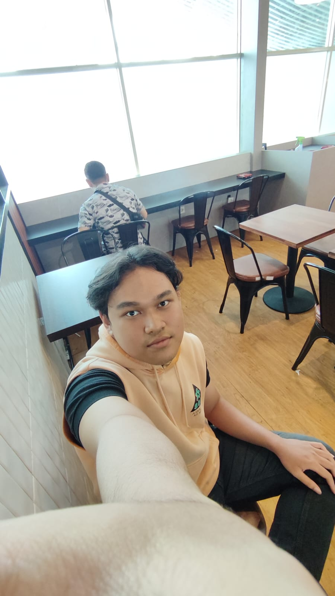

About Us
Halaman ini menjelaskan tim pengembang yang bertanggung jawab dalam perancangan dan implementasi sistem monitoring suhu dan kelembaban berbasis WebGIS untuk wilayah Kota Tangerang Selatan.
-
Rifqi Fairuzzabady
🗺️ WebGIS DeveloperBertanggung jawab dalam pengembangan antarmuka WebGIS, integrasi data sensor IoT, serta visualisasi data suhu dan kelembaban secara interaktif.
-

M. Raihan Ardeti
📊 Data & Spatial AnalystBerperan dalam analisis data spasial, pengolahan data hasil pemantauan, serta penyusunan laporan dan dokumentasi sistem.